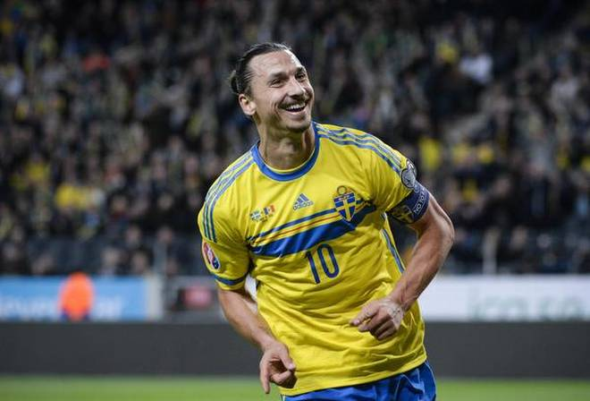

This is a page displaying images of Zlatan playing football
1. "We're looking for an apartment. If we don't find anything, then I'll probably just buy the hotel." - At his unveiling as a Paris Saint-Germain player.
2. "It's true I don't know much about the players here, but they definitely know who I am." - On his move to Ligue 1 in 2012.
3. "We were looking through his playlist in the dressing room -- there was lots of Justin Bieber, Jonas Brothers and Selena Gomez. It is nice to know that even David Beckham doesn't have good taste in everything."
4. "There was the thought that this would send me into retirement. I sent their entire country into retirement." - After scoring twice to qualify Sweden for Euro 2016 over Denmark.
5. "I don't believe they can change the Eiffel Tower for my statue, even the people behind the club. But if they can, I will stay here -- I promise you." - On his future with PSG.